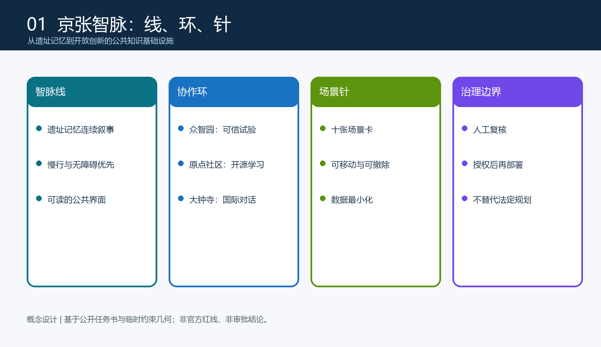

总览地图与三层范围
临时边界下的总体关系，用于复核。
CINFED / FORMAL CONCEPT PACKAGE
以“线、环、针”串联遗址记忆、开放创新与日常公共生活。
临时边界下的总体关系，用于复核。
众智园、AI 原点社区、大钟寺协作回路。
连续可达、低侵入和待核验条件。
十张场景卡，人工复核、可退出。
site_area_sqm：以 metrics.json 复算为准。
green_ratio：以 metrics.json 复算为准。
public_space_ratio：以 metrics.json 复算为准。
覆盖 agent.1—agent.6；自检状态以 self_check.json 为准。来源：公开任务书与 source_registry；假设：官方边界、权属、控规及工程条件待补充。
本页不加载外部脚本、地图瓦片、字体或追踪代码。最终指标以 metrics.json 与 GeoJSON 为准；空间与实施表达均待专业团队结合官方附件复核。
